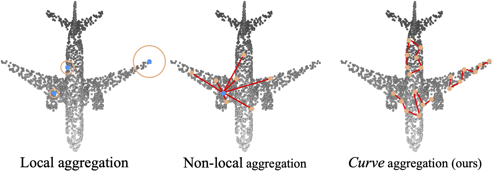

Walk in the Cloud: Learning Curves for Point Clouds Shape Analysis
- Tiange Xiang 1
- Chaoyi Zhang 1
- Yang Song 2
- Jianhui Yu1
- Weidong Cai 1
- 1University of Sydney
- 2University of New South Wales


Overview
Discrete point cloud objects lack sufficient descriptions of shape geometries. In this paper, we present a novel method for aggregating curves in point clouds. Sequences of connected points (curves) are firstly grouped by taking guided walks in the point clouds, and then subsequently aggregated back to the point features. We provide an effective implementation of the proposed aggregation strategy including a novel curve grouping operator followed by a curve aggregation operator. Our method was benchmarked on several point cloud analysis tasks, and we achieved the state-of-the-art results on shape classification task, shape part segmentation task and shape normal estimation task.
Video
(contains audio w/ subtitles)
Highlights
- A long range feature aggregator focuses on object shape and geometry.
- State-of-the-art accuracy on ModelNet40 classification: 93.8% w/o voting, 94.2% w/ voting.
- State-of-the-art instance mIoU on ShapeNetPart segmentation: 86.6% w/o voting, 86.8% w/ voting.
- State-of-the-art cosine distance on ModelNet40 normal estimation: 0.11.
BibTeX
If you find our data or project useful in your research, please cite:
@InProceedings{Xiang_2021_ICCV,
author = {Xiang, Tiange and Zhang, Chaoyi and Song, Yang and Yu, Jianhui and Cai, Weidong},
title = {Walk in the Cloud: Learning Curves for Point Clouds Shape Analysis},
booktitle = {Proceedings of the IEEE/CVF International Conference on Computer Vision (ICCV)},
month = {October},
year = {2021},
pages = {915-924}
}